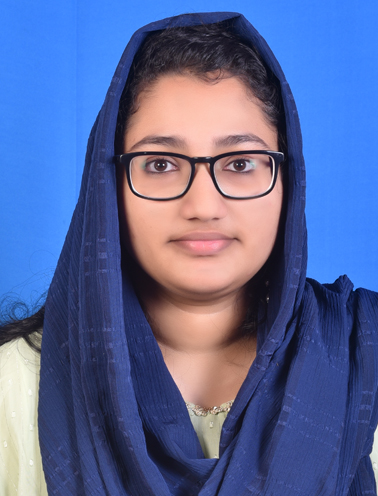

PROFILE
RAMCY R
M A Nivas,
kochalummoodu, Mudapuram P.O
Chirayinkeezhu, Thiruvanathapuram

About Me
Hi, I am Ramcy R. I am a B.Tech graduate from Kerala Technical University in Computer Science. I would like to be an Full Stack Developer.Looking to begin a career in the technology industry, applying academic knowledge and practical skills gained through
coursework and personal projects.
Committed to continuous self-improvement and eager to
contribute to innovative projects while collaborating effectively with a team of professionals.
Educational Qualification
B-Tech in Computer Engineering
- College of engineering Attingal, Thiruvananthapuram, Kerala
- 2020 – 2024
- cgpa: 7.65
Higher Secondary Education
- P N M G HSS, Koonthallur, Chirayinkeezhu
- 2017– 2019
- pass percentage: 97.4
High School
- Seethi Sahib Memorial HSS, Kochalummoodu, Mudapuram P.O
- 2016– 2017
- pass percentage: 90
View my linkedin profile